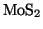
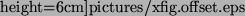

The aim of the virtual machine is to mimic the dynamic of a true experimental
AFM system. In this subsection we shall briefly describe a response
of the whole machine (Omicron RT-AFM with an easyPLL Nanosurf Demodulator)
on a square periodic offset added to the distance signal  .
This is an example of how one can experimentally find the correct
parameters needed to run the virtual AFM machine.
.
This is an example of how one can experimentally find the correct
parameters needed to run the virtual AFM machine.
Fig. 11 (a) shows the frequency response to a periodic
square excitation added to the surface-tip distance  while the
microscope was in operation above a
while the
microscope was in operation above a

substrate covered by silver clusters. This measurement was performed for two different settings of the ADC feedback loop. A loop gain of 2% (slow response) corresponds to the typical value for normal imaging while a loop gain of 20% (fast response) is only used when approaching the surface at the beginning of the experiment. The asymmetry of the response between a positive and negative
Fig. 11 (b) shows the response calculated with
the virtual AFM modelling the tip by a sphere of the radius 20 nm
and taking into account only the van der Waals interaction between
tyhe tip and sample, with a Hamaker constant of 1 eV. The experimental
behaviour can be well reproduced by choosing the parameters  and
and  [29]. The shape of the peaks is qualitatively
correct while the time constants, ranging from a few milliseconds
at 20% to a few tens of milliseconds at 2%, are of the same order
of magnitude as in the experiment.
[29]. The shape of the peaks is qualitatively
correct while the time constants, ranging from a few milliseconds
at 20% to a few tens of milliseconds at 2%, are of the same order
of magnitude as in the experiment.
|
 |